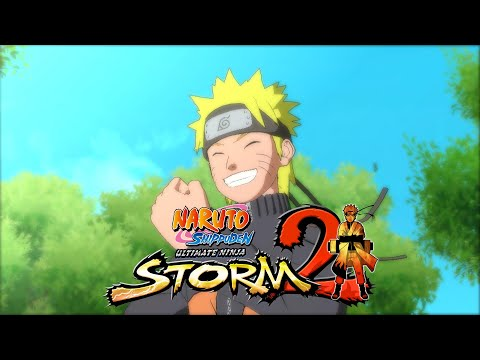

NarutoStorm2Revived
Preservation, research, and enhancement project for NARUTO SHIPPUDEN: Ultimate Ninja STORM 2. Focused on documentation, tooling, reverse engineering, modding support, and long-term preservation.
View Project →I build open-source tools, launchers, frameworks, and research projects for older games. My work focuses on preservation, offline functionality, modding support, reverse engineering, documentation, and keeping older software easier to study, maintain, and enjoy.

NewPreservation, research, and enhancement project for NARUTO SHIPPUDEN: Ultimate Ninja STORM 2. Focused on documentation, tooling, reverse engineering, modding support, and long-term preservation.
View Project → Framework
Framework
South Park game research and modding framework for tooling, debugging, asset exploration, reverse engineering, and preservation research.
View Project → BO2
BO2
Black Ops II preservation project focused on offline functionality, launcher development, compatibility fixes, tooling, documentation, and research.
View Project →